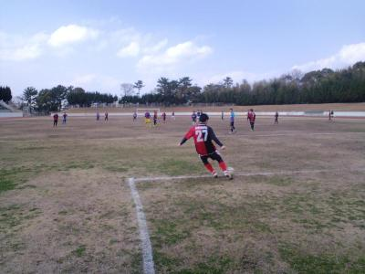

そろそろ偽ルフィー登場の季節になってきましたね。今日は麦わら帽子持参だけでかぶらなかったですけどね（笑）
だんだんと暑くなってきて、癒しの木がほんと重宝しますね。
今日は遅刻、早退を含めて１３名の参加がありました。一昨日くらいまで６人とかだったので久々の１０人以下かなって思ってましたが、結果的には多く集まりましたね。その中でつよぽんは９：３０までしか居れないのに、わざわざ朝早めに来て、参加してもらってそういった気持ちになってくれることはチーム全体として嬉しいことですね。
最初はポストシュートしました。僕はほとんど入らなかったけど、いいシュート決めている人も結構いましたね。浮き球をシュートするのは結構難しいですね。浮き球、ふわっとシュートは今日も決めましたよ（笑）
次に真ん中から左右両方にボールを出して、そこからセンタリングあげてという感じでしたが、今日はゴールライン側からのクロスもあれば、ゴール前に走りこむのにあわすアーリークロスもいい感じでしたね。先週の試合も結構、中盤からゴール前に放り込まれていたので、うちも少しずつそんなプレーが出来るようになれたらいいですね。
その次は攻めと守りをしましたが、段々と暑さに参ってくる季節になると動きが止まってきますね。周りにお子さん連れも居たりで、結構慎重にしていた感じがしました。
１１：００早退が２名いたので１０：００過ぎからミニゲしました。最初は５対６、前ちゃんが来てくれて６対６が一回あって、１１：００からは５対５でしました。
今日もかきさんと前ちゃんのお笑い道場でしたが、今日はかきさんが前ちゃんだけでなく、もりちゃんやはまさんにも戦いを挑んでたのがおもろかったっす。まあ、相変わらず、前ちゃんにやられてましたが、かきさん以上にもりちゃんがやられてたような（笑）
あとは、今日はアッパーカットをくらう人が多かったですね。まずはもりちゃんから始まって、次に僕、その後は自爆を含めてスガちゃんが２連発くらってました。韋駄天のはずが、最後の方は動いてなかったので、また朝まではしごだったんでしょう（笑）
それとはまさんがビブスを凄く愛していることが判明しました。これからははまビブって感じになりますかね（笑）、次回はいつも以外にブルーとグリーンの３枚重ねでよろしくでっす。
まあ、そんな感じで楽しい時間を過ごしました。
これから暑くなってきますので、水分も多めにとって、無理しないようにしながら楽しくボール蹴りましょう。
本日参加された皆さん、お疲れ様でした。
今日は朝から雨かどうかでそわそわしてましたが、結果的には練習試合が出来てよかったですね。昨日にメールしてないと、今日はあるんですか？っていうメールが大量に来てた気がするのでしといて良かったです（笑）
最初は雨が降ったりしてましたが、３本目くらいからは雨も止んで、時折晴れ間も見られましたね。
今日はお招き頂いたＹＯＤＲＩＤさん、ありがとうございました。お誘い頂いた時に正直、レベルが違うので逡巡しましたが、楽しい時間を過ごせました。ただ、今後は３０歳以上のメンバーでお願いします（笑）、若いのにはついていけん（涙）
２０分４本しましたが、うちのチームで１９人の参加がありましたので、ある程度僕の方で似ている感じ？の人を振り分けて、その２人でグッパーしてもらいました。（メンバーは試合結果に記載しています）
１本目ですが、今日はたっちゃんがお休みだったから、いきなりずっこけはなかったのが残念ですが（笑）、最初から押されている中で、スケさんがセンターバックで相手のクロスやサイド攻撃をかなり止めてくれてました、それで体力が無くなったのか、ゴールキックはしょぼかったですけど（笑）、キーパーのつよぽんも、スローインするもゴール前相手に渡ったりしてましたけど、キーパーユニ着てみたかったということでしたが、楽しそうでしたね。
なんと、初得点はうちでした。中盤でしげさんがボールを受けて、そのまま縦へのスルーパス、それを絶妙のタイミングで裏へ飛び出したテラさんが取って、キーパーと１対１、冷静にゴールを決めてくれました、その後も結構、攻められてましたが、審判していた僕には早く時間になれっていう思いでした。最後のコーナーキックをクリアした瞬間に喜んで笛を鳴らしました。トータル的にはもちろん負けましたが、１本ごとでは初勝利、良かったですね。
２本目は、相変わらず押されていることも多かったですが、僕もバックで精いっぱいだったのであまり覚えてないですが、何回かうちのチャンスがあったりでいい感じでしたね。１点は取られましたが、あれはまあ、うちのミスでもないので実際は同点だという気持ちで耐え抜いた感がありました。ただ、個人的には前に居たチームの掛け持ちしている人に股抜きされたので悔しかったなあ。それにしてもゴールキック良く蹴ったなあ、飛ばんかったけど（涙）
３本目。今から自画自賛タイムさせてもらいまーす。試合には負けましたが、今年初得点させてもらいました。アシストはわだっちとのことでそうしときます（笑）。ワントップでキーパーしてたわだっちのゴールキックが、センターサークルの方にまで跳ねて飛んできて、僕にぴったりマークついているセンターバックと競り合って、見事に勝って、ヘディングでバックを超えて、そのままゴールの方へボールが転々とし、ボールが浮いているその状態で、キーパーが前に出ていたので、２０ＭＭくらいあったけどインサイドで狙いすましてループシュート、見事にふわっとゴールに収まりました。まあ、狙ったとはいえ、もちろんまぐれです（笑）。でもきっと今までのうちの中ではベストゴールだろうって勝手に思ってます（笑）
それ以外にもよっしーからの左サイドへの殺人スルーパスを何とか追いついて、わっちが中央に入っていたけど、逆サイドから走りこんでいたごりんさんへのドンピシャのボールや、わっちとのアイコンタクトでのヒールパスとか個人的にはほんと久々にトップしてて楽しかったですね。いつもはサイドドリブラーでへたってるだけなんで。ただコーナーはごめんちゃい。
４本目は得点こそなかったですが、ユウちゃんが果敢に攻めたりと結構攻勢だったと思います。特にかきさんが奮闘してました。左寄りの中盤で、ボールをキープ、奪われても取り返してキープ、その度にベンチからは「オー、オー」との歓声が、最後は足を痛めて終わりというオチでしたけどね（笑）
でも終了前のテラさんへのスルーパスはお見事でした。テラさんもバック二人をかわして、左足でシュートしましたが、ちょっと角度が少なく、キーパーの届くところで残念でしたが、一点目のことがあったので、ほぼテラさんがまたやってくれるっていう期待感で満ち溢れてましたよ（笑）、でも相手ゴール前で２人をかわすテクは流石です。
まあ、そんな感じで今日は終わりました。相手チームさんのミスも多かったですが、うちのチームも楽しみながら少しずつ皆さん、上達しているんだなって思いました。何より嬉しいのは指示的な言葉使いとか無く、ミスってもどんまい、いいプレーには褒める、拍手とかが自然と出ていて、ほんと他のチームに負けないうちの良さが表れていたと思い、一緒にボール蹴れていることを代表として嬉しく思ってます。
最後に今日はレンタル屋、まっさんが大繁盛でした。レガースだけはまあ、シューズもって誰ですかね～。たぶん今頃はＬＩＮＥでかきさんに説教されているでしょう（笑）、でもジーパンでしようとした伝説のぐっさんには勝てないですけどね（笑）
本日参加された皆さん、お疲れ様でした。
今日はな、なんと練習のみで２０名の参加がありました。試合だと多く来るチームは結構聞いたりしますが、練習でグランドでも無い中ではほんとみんな練習を楽しみにしてくれているんだなってしみじみと思いました。８名の方は本日は残念でしたが来週以降またお願いしますね。つよぽんはひょっこりかわいいお子さんと一緒にのぞいてくれましたけどね。
昨日の夜に２０名だったらいつもの所でゴール使って何しようかとか、ミニゲは３チームかなとか考えたりしてたんですが、金曜日の雨の影響でいつものところは水たまりがあったので、ちょっと枚方大橋寄りの広場でしました。
少年サッカーがいつもしているところっぽくてちょっと罪悪感ありました。
人通りが多いのでゴールは組立てずにミニゲ中心でしました。最初は２人でパス練習して、２つに分かれて、最近定例化してきた２個のボールを使った鳥かごをしました。いつもより少し長めにしましたが、結構疲れますね。でもボールを出す時もらう時にもう一つのボールを気にしないと駄目なんで、自然と周りを見る練習にはなるかなって思います。
その後はミニゲでしたが、２チームで１０対１０でしました。なので、いつものところでは取れない大きさで、僕の歩幅で縦が８０歩、横が５０歩でしたので、実際だと縦５０MM、横３０MMくらいはあったような今までで一番大きなコートでしました。
見どころはところどころありましたが、ゴールが小さいので最初は点が中々入らなかったですね。まあ、凡ミスで外れは何度かありましたが（笑）
そんな中、最初のゴールは左サイドからの強めのゴロを中央でたっちゃんが見事なトラップでそのままゴールが生まれました。
あとはあんまり覚えてないですが、わだっちからのパスをかきさんが受けてシュートを決めたのが良かったですね。今日は前ちゃん居なかったから突っ込まれずにのびのびしてたんじゃないでしょうか？（笑）、なんかエイプリルフールのLINEがスルーされてショック受けてましたよ（笑）、ごりんさんも携帯番号自白させられて、あーあ、かわいそうに・・・。
全体的に広かったのでアーリークロスやサイド攻撃とか、中央突破とかいろんな攻撃のバリエーションがあったと思います。でも長くしていたので最後のほうはみんなちょっと足が止まってましたね。僕は左足が大丈夫そうだったんだけど、右足ぐねて、今も湿布してます（涙）。シゲさん途中でつってたし（笑）、今日はいつもな中央を駆け上がるスガちゃんが大人しかったですね、きっと朝の５時まで４次会だったのでしょう。
最後の試合、ごろうさんが持ち込んでシュート、跳ね返されて、２列目に居たかきさんへ、前にはデフェンダーが壁を作っているなかで、直立不動で、落ち着いてボールをふわっとあげたら見事にデフェンダーの頭上を越えて、ゴールが決まりそれが決勝点になりました～。みんな拍手したら、謙遜して照れてましたね（笑）
来週は練習試合です。相手さんは以前にもぼこられりーたされましたし、来週も同じような感じになるかもしれません。サイドからクロスが上手ですので、うちもそれが出来ればいいですね。まあ、勝敗は気にせずに楽しみましょう。ただ体力的に大丈夫なら、相手のマークを外して声を出してボールをもらったり、裏へ走ることは多少意識づけれたらいいなって個人的には思います。朝早いですが、時間厳守で早目にアップ等お願いします（グランドの準備のお手伝いはしなくていいと思います）
本日参加された皆さん、お疲れ様でした。
今日は当初参加が少ないかなって思ってましたが、結果的には早退も含めて１７名の参加がありました。
早退で１、２時間しかボール蹴れなくても遠くからわざわざ来てくれるのは、ほんと嬉しいことです。僕もほぼ今日は見学みたいなもんでしたが、やっぱりメンバーと一緒に楽しい時間を過ごせることがいいなって思って、参加しました。（部費貰いにも兼ねてですが）
今日はぐっさんや、おーざわさん、テラさんとか久々のメンバーの参加もあって楽しくで来たと思います。ちょっと滑りやすい所もありましたが、グランドもまあいい感じでしたね。
今日は１０時に早退のかきさんシフトで練習を組みました。最初は２つに分かれて鳥かごして、先週と同じく、途中でボール２個でしました。結構、難しいけど、いい練習になりました。
次はドリブル、センタリングシュート？、少しドリブルして、ポストでワンツー、受けた後にサイドにボールを蹴って、サイドからセンタリング、それをシュートするって感じでした。ノートラップでしていた時もあって、実践でもオフサイドに気を付けてになりますが、サイドからの上りにボールを出すということはあると思います。まあ、時間の関係上、とっさに思い付いただけなんですけどね（笑）
次は攻めと守りで僕がキーパーして８対８で大きくコートを取ってしました。結構、逆サイドにボール蹴ったり、タカさんとかが裏から走りこんだりして、試合で出ればいいなっていうプレーがいくつもありましたね。
かきさんが、熊と闘って負傷したとかでまずはローキックから攻めるとか言ってたけど、熊じゃなくてごろーさんに炸裂してましたね（笑）
んで、１０時過ぎからは１１時早退の人もいたので、早目にミニゲをしました。これも大きくコートを取ってしましたが、久々の参加のテラさんが珍しくミスったりで足についてない感じで、僕が怪我がなければ今日がチャンスやったのに（涙）。代わりにまっとんやもりちゃんが頑張ってくれてました。もりちゃんはカラータイマーが１分ちょっとで点滅して、くたばってましたね（笑）。後はよっしーが結構、こけてた気がします。
もう春というか、汗ばむ季節になってきました。水分補給をマメにして、言えた義理じゃないですが怪我の内容にして、楽しみましょう。浜さんも早く治してくださいね、ていうかしばらく安静って言われてて、蹴ったらあかんやろ（笑）、でもその気持ち凄くわかります。
てな感じの一日でした。本日参加された皆さん、お疲れ様でした。
皆様お疲れさまです！
2試合目のＡＳ鬼人さんとの試合では、絶妙なパスをもらって、キーパーとほぼ一対一でシュートまでいけたのですが、プレッシャーのせいか、キーパーへのやさしいパスになってしまい、
悔しかったです(T . T)
体力的にはきつくてバテバテでしたが、楽しくプレーさせてもらい、皆さんありがとうございました！
今日は前ちゃんが柿さんをどれだけ想っているかを活動報告に書いてくれるらしい（笑）
まあ、それはさておき、今日は体験参加のけいちゃん（勝手に命名（笑））を含めて、１１名の参加がありました（そのうち、１名は居てるだけのポンコツでしたが（涙））
ほんま、今日は駄目でしたね。歩くのがやっとで、とても走れない状況でした。ちょっときっちり治すまで無理しないでおこう、ね、浜さん。
当初９名でしたので、全員で外６名、中３名で鳥かごをしました。但し、２週間前の女子サッカーチームがしてたのをマネてボール２個でしました。個人的には面白かったですね。出すときに出し先がボールがあるか確認したり、出すときに声を掛けて出したりとで、結構良かったと思います。でも、やっぱりボールが同時に同じ人にいったりすることもあって、特に柿さんとつよぽんが多かった気がしました。
次はシュート練習でしたが、僕はポストが精いっぱいでしたが、ここはふっかんの独壇場でしたね。人数が少なかったので回数が多かったですが、今日はお見事にゴールに嫌われて、最後の方はポストとかに連発、ラス２でやっと決めたけど、ラストはやっぱりポスト（笑）
次はセンタリングシュートしました。何回かセンタリングあげたけど、助走があまり出来ないからヘロヘロでした。センタリングで中央に弾んだボールを柿さんが３連続くらいでゴールに突きさして、試合でも柿さんには浮き球を出せばいいんかなって思いましたね。お見事でした。
わだっちはゴール前で滑ってころんで、柿さんが「あんなんで笑い取るのは卑怯や」っていきなり突っ込んでました。でも前ちゃんからは「シュートの決定率低いけど、笑いの決定率１００％やな」ってやり返させられてましたね。ラスト一周で最後は柿さん、いい感じで終われなかったら前ちゃんに「もういっかいや」って言われて、結局４回くらいされてましたね。昔の学生のような感じでした。（笑）今日は３人トリオの漫才がずっと続いてました。
次は攻めと守りをしました。広く取って、フリースペースでしましたが、僕はキーパーしてたので、寒かった（涙）。でもみんな楽しそうでよかったです。結構、よっしゃんやタカさんとかが裏へ抜けてのクロスとかもあったりで、いい形もありましたね。
最後はいつも通りミニゲでしたが、僕を入れて５対５になったんですが、邪魔者以外なにものでもないって感じでした。早くけがを治そう。
たっちゃんが柿さんを抜こうとして、股抜きをしようとしたら、股抜き止めるのはさすがに上手でシャットアウトされてました。
まあ、いつもどおり、笑いありの感じで終わりました。
本日参加された皆さん、特に昨日と連続の皆さん、お疲れ様でした。
みなさん、お疲れさまでした。
カツさん、ナイスパスありがとうございました。受けた時に、ゴロウさんの『コース！』の一声で、冷静にキーパーの位置を見ることができました。みなさんから、冷静に、冷静にと、いっていただいたのですが、もう少し、トラップからシュートまで、速くしたいですね。頑張りますm(__)m
エースのカッキーさんに前でいい形で、もっと渡したかってんですが、体力不足で。エースが入れるともっと盛り上がったのに、すいません。
菅ちゃんへのポールは、ボールを受けるまでは、まっさんが裏へぬけるのを、イメージしていたんですが、いざ受けて、まっさんがイメージ通り裏へ抜けたら、それに、ディフェンスがつられて、中の菅ちゃんに、きれいなパスコールが出来たので、さすがに、そっちに、蹴っちゃいました。ナイス、おとりでした。
この試合のときは、ふくらはぎが、痙攣していて、ほとんど、走れなかったので、ごりんさんと前ちゃんとゆうちゃんに、助けられました。
ありがとうございましたm(__)m次は、もっと相手のマークをしっかりします。
足を痛めた方や接触された方もいらっしゃっいましたが、大丈夫でしょうか？
楽しんで試合ができました。皆さん、ありがとうございましたm(__)m
ＫＩＮＧ カツです。
皆さん、本日はお疲れ様でした～～
勝ちはなかったものの３チーム中トップになったことは、大変嬉しいことですね・・・
やっぱり負けないということは強いということです。
今日はほんとうに楽しかったです。
四半世紀どころでなく、３５年ぐらいぶりに試合で得点に絡むシーンに関われたこと、幸せでした。
皆さんのサポートやお気遣いをいただいて、プレーできることに感謝です。
これからも、ジジイをやさしく見守ってください。

今日は午前中まで雨が降っていて、せっかくの楽しみがどうかなって思いましたが、昼前には止んで、いいグランドで水はけも良くて楽しくできました。
今日は土曜日でしたが、うちのチームにお誘いを頂きましたので、参加しました。お誘いして頂き、また対戦して頂いたＳＰＲＡＫさん本当にありがとうございました。また、ＡＳ鬼人さんも対戦して頂きありがとうございました。おかげさまで楽しい時間を過ごせました。今後ともよろしくお願い致します。
ただ、場所を間違って準備をお手伝い出来なかったり、試合順番を勘違いしたりとご迷惑をお掛けしました。うちのメンバーからはまあ、まっさんやからでしょうけどね（笑）
今日は３チームでの巴戦で２０分、前後半でした。
試合ごとに簡単に報告しますね。まずはＳＰＡＲＫさんとの前半でした。いい感じでお互いに攻めたり守ったりで、同じくらいの感じで出来て楽しかったですね。ここ最近、ボコラレリータ２連発でしたので（笑）
初得点はカツさんからのセンタリングでうまれました。年齢を感じさせない動きで、右サイドでボールを持って、ゴール前に、それをよっしーがいい感じで受けて、冷静にゴールを決めてくれました。
試合終了前に相手さんの攻撃で左サイドを裏を取られて、うちのバックのポジショニングがかぶったところを抜けられて、そのまま右に流れながらのカーブが掛かったシュートが決まり、同点でした。なぜか悪いのは懸命に横っ飛びしたキーパーしてたスガちゃん（笑）
個人的にはバックのはずのＢＧが、居なくなってえらい目に遭いました（涙）、まあゴールキック一本蹴れたのは良かったけど、もうちょっと届くはずが駄目でしたね。
２本目はＡＳ鬼人さんとでした、ボール回しや裏への動きが上手でしたね。ほんとよくデフェンスしてたと思います。特にごりんさんのキーパー奮闘が光りました。そんな中でもチャンスも何度かありました。左サイドでボールを受けたまっとんがプレッシャーに負けて、ポコッたり、そのまっとんのボールをちょい横取りぽかったわだっちがゴール前で一人かわしたのはいいけど、最後はキーパーにボールプレゼント（笑）、わっちの惜しいシーンもありましたね。
得点はオウンゴールでしたが、本人はシュートと言い張ってますが、独り言でしょう（笑）、ボールを中にいれたのが相手デフェンダーに当たってゴールになりました。よう考えたらこの１点があったから、一位になれたんですね。でもスガちゃん、センターバックしてたよね？？？
あとは一人上手い人が居て、わだっちと前ちゃんをかわしたのは見てて凄かったですね。
ＳＰＡＲＫさんとの後半は、僕はいじめられっこになりました（涙）。トップだったんだけど、ハーフが全体的に上がってたのと相手のデフェンスラインが高かったのもあって、オフサイドでいじられるは、頑張って走ってたけど、結局はデコイランでスガちゃんが美味しいところ持っていくは、よっしゃんからのクロスをヘディングで狙い澄ましたら、デフェンスに阻まれるは、ループシュートしようとしたら、飛びすぎるはで散々でした。
うちの得点は、よっしーがボランチの位置から少しボールを持って上がって、僕に来るだろうって思ってオフサイドにならないように右サイド裏に走ってたらおとり役で、センターで居たスガちゃんに見事な縦パス、そのままドリで冷静にスガちゃんが決めました。
今日はやれば出来る子のよっしーとスガちゃんが大活躍でしたね。ぜひコメントよろしくお願いします。
終了ギリギリで、相手チームのボールがシュートかクリアかわかんないけど、見事なロングループシュートになって結局、また同点でした。そのシュート打ったのは知り合いだったので、ちょっとこんちくしょうでした（笑）
ＡＳ鬼人さんとの後半は、個人技ではかなりやられましたが、何とか耐え忍んでたんですが、ドフリーでキーパーと１対１になり、どうしようもなく決められました。１試合目と同じ上手い人だったと思いますが、ボールタッチが上手でしたね。
でも、うちのチームも頑張りました。今日は素敵な応援者が来ていたわだっちが左サイドからパスかシュートかわからんけど、それがなんかわからんけど、カツさんに渡って、ドフリーでごっつあんで同点に追いつきました。今日は１ゴール１アシストのカツさん、チーム最年長記録です（まあ、破られることはないでしょう（笑））、ぜひ喜びのコメントをお待ちしてます。
僕は右サイドを２回ほど駆け抜けて、クロス失敗して痛めていた足がやばくなって交代（涙）
そんな感じで試合は終了しました。
番外編としては柿さんがわだっちの応援団長へいきなりちょっかいを掛けたのがびっくりしましたね。あの行動は神の域ですね。そのうち、わだっちとごりんさんが家に押しかけられますよ（笑）
明日も練習があります。僕は新人さんも来るので、立場上もあり行きますが、軽めにしようと思います。僕以外のダブルヘッダーの方は今日は早目に休んで、明日はまた普段通り、楽しくボール蹴りましょう。
本日、参加された皆さんお疲れ様でした。
おまけは今日のヒーローのボール蹴る瞬間です、足の角度とか駄目出しだれかよろしく（笑）
今日は昨日の雨の影響とドックランのイベントのため、いつもの場所は予想通り利用できず、枚方大橋側に少し移動した広場でしました。ぱっと見、大丈夫かなって思ってたけど、やっぱり雨の影響で、水があふれてくる感じでしたね。きっと参加された皆さんは、靴の中までびちょびちょだったんじゃないかなって思います。
今日は合計で１２名の参加でした。
最初は二手に分かれて、鳥かごして、その後はゴールを立てれなかったので、ミニゲをずっとしました。
まあ、いつもどおり柿さんとまえちゃんのやりとりとかいろいろありましたが、今日はたっちゃんジャンプが誕生したのが良かったかな。まっとんプレッシャーやったみたいやし（笑）
足元が滑るので相変わらず、僕は良くこけましたが、わっちに柔道で言う支えこみつり落とし？だっけ？みたいな感じで、こかしちゃったりしてダメダメでしたね。
最後の方は左足が痛くて、今もシップしてるけど治るかなあ、浜さんもむりせんようにね。
来週は土曜日試合で、日曜日も開催します。ダブルで出れる人はよろしくお願いします。来週の試合は招待試合です、主催者さんに迷惑を掛けないように、お手伝いとかもきちんとして、礼儀とマナーをきちんとお願いしますね。
本日参加された皆さん、お疲れ様でした。